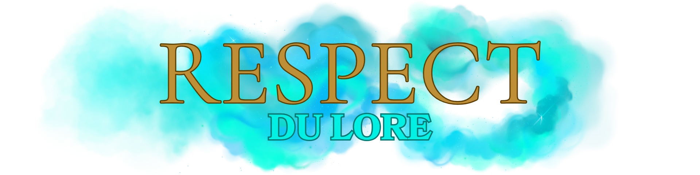

Accueil
Lore du Serveur
Rejoindre le Discord
Le Jeu de Role Lexique RP
Règles Générales Respect du Lore Régles Discord
Règles /me Règles Coma Règles Trames Groupes & Interactions
Règles Poudlard Règles Professeurs Règles Médicomages Magies, Sorts & Dons
Règlement Streamers
Le Jeu de Role Lexique RP
Règles Générales Respect du Lore Régles Discord
Règles /me Règles Coma Règles Trames Groupes & Interactions
Règles Poudlard Règles Professeurs Règles Médicomages Magies, Sorts & Dons
Règlement Streamers

Wizard’s Express est un serveur RP sérieux et immersif, ancré dans l’univers de Harry Potter et des Animaux Fantastique. Chaque joueur y incarne un personnage vivant dans ce monde magique, et il est donc indispensable de respecter son ambiance et ses codes.
Tout comportement anachronique, incohérent ou volontairement troll sera sanctionné. L’objectif est que chacun puisse profiter d’une expérience de jeu crédible, cohérente et riche en histoires.
- Un élève reste un élève, un professeur reste un professeur. Les comportements doivent rester cohérents avec leur rôle.
- Les expressions modernes issues de notre monde (“wesh”, “mdr TikTok”, etc.) sont interdites. ( les réseaux sociaux sont bien sûr possible pour les née moldu habitant du côté moldu tout comme la télé, rester cohérent ).
- Les insultes gratuites, comportements excessifs ou bagarres sans raison n’ont pas leur place.
- À Poudlard, les élèves parlent et agissent comme dans le monde magique, pas comme dans un quartier londonien actuel.
Cas Particulier : Les Sangs-Purs
Principes de base
- Le serveur s’inscrit dans la continuité de l’univers de J.K. Rowling.
- Les personnages, sorts et lieux doivent rester cohérents avec le monde magique.
- Pas de pouvoirs inventés, de magie exagérément puissante ou hors-lore.
- Un seul personnage principal par joueur (sauf accord exceptionnel du staff).
- Les noms doivent rester crédibles et adaptés à l’univers.
- Les personnages ne peuvent pas être liés directement aux héros de la saga.
Liste des noms Sangs-Purs (2010)
Ashthorn – Avery – Bulstrode – Burke – Cattermole de Fawley – Duskbane – Flint – Greengrass – Harrowmont – Ironwood – Macmillan – Marchbanks – Morholt – Nott – Parkinson – Ravenshade – Rosier – Rowle – Shafiq – Solwyn – Travers – Valecrest – Vernicourt – Yaxley
Si un nom est déjà utilisé, il sera indiqué comme indisponible dans la liste mise à jour. Vous ne pourrez pas le réutiliser (sauf en cas de BG commun ou accord explicite avec le joueur concerné).
Cohérence du Sang-Pur
- Porter un nom Sang-Pur implique de jouer un véritable Sang-Pur.
- Les deux parents de votre personnage doivent partager la même lignée Sang-Pur.
- Les mariages mixtes avec des Moldus ou des Sang-Mêlés sont interdits dans ce cas.
- Même si un nom inventé précède le mariage, le fait de prendre un nom Sang-Pur occupe une place limitée sur le serveur et doit donc être respecté.